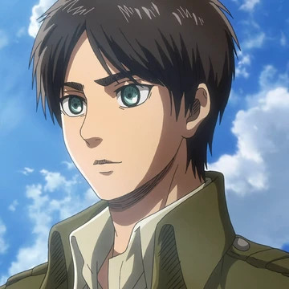
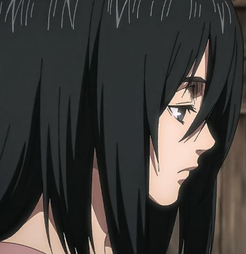
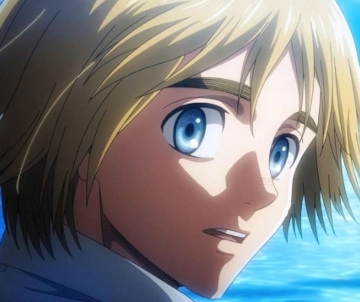
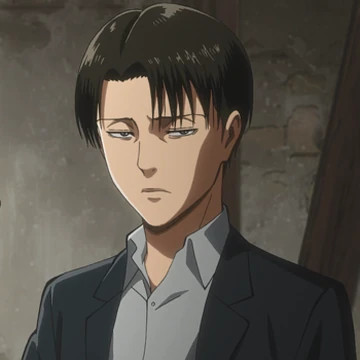
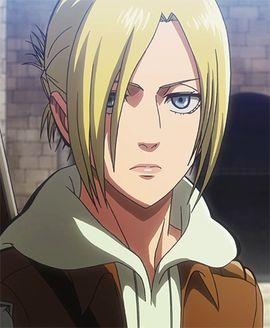
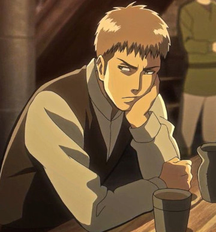
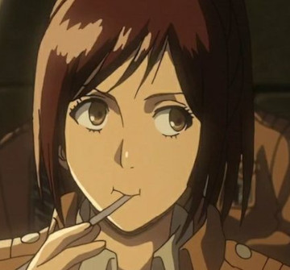
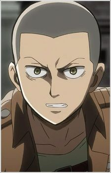
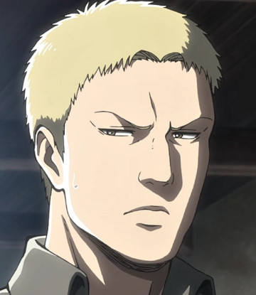
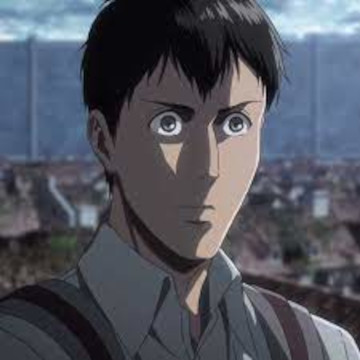

Uma bela óbra chamada Attack on Titan
Aqui vou apenas explicar poucas coisas sobre a história e falar minha opinião dela, então se não quer ter spoilers da óbra, pare e sáia desse site agora.
Sipnóse
A humanidade vive confinada dentro de enormes muralhas após serem quase exterminadas por criaturas gigantes chamadas Titãs, que devoram humanos sem razão aparente
Alguns personagens
Eren Yeager: O protagonista da série, determinado a se juntar à Tropa de Exploração e exterminar todos os Titãs após testemunhar a morte de sua mãe nas mãos de um Titã.
Mikasa Ackerman: Adotada pelo pai de Eren após perder seus pais, Mikasa é habilidosa em combate e tem um forte vínculo com Eren. Ela está determinada a protegê-lo a todo custo.
Armin Arlert: Um amigo de infância de Eren e Mikasa, Armin é inteligente e estratégico, embora inicialmente seja mais hesitante em relação ao combate.
Levi Ackerman: Conhecido como o "Soldado Mais Forte da Humanidade", Levi é um líder da Tropa de Exploração, conhecido por sua habilidade excepcional em combate.
Annie Leonhart: Uma guerreira habilidosa da Tropa de Exploração..
Jean Kirstein: Um recruta que inicialmente mostra uma atitude egoísta, mas eventualmente se torna um membro valioso da Tropa de Exploração.
Sasha Blouse: Conhecida por seu apetite voraz e sua habilidade como franco-atiradora, Sasha é uma personagem adorável e leal.
Connie Springer: Um jovem membro da Tropa de Exploração, Connie é gentil e tem uma forte amizade com seus colegas.
Reiner Braun: Reiner é um dos recrutas da Tropa de Graduação que se junta aos personagens principais. Ele é retratado como um camarada leal e corajoso, muitas vezes liderando seus colegas em situações perigosas. Reiner é um membro muito confiável do grupo e desempenha um papel significativo nas batalhas contra os Titãs.
Bertolt Hoover: Bertolt é outro recruta da Tropa de Graduação que se destaca pela sua natureza quieta e reservada. Ele é um membro confiável da equipe e mostra habilidades notáveis durante os treinamentos e missões. Assim como Reiner, Bertolt é parte integrante das operações da Tropa de Graduação.
Opinião
História
Ao contrário de muitas obras como Dragon Ball, Naruto, One Piece, Bleach e Boku no Hero, Attack on Titan não se baseia em um universo repleto de poderes complexos ou fantasias exageradas. Em vez disso, ele apresenta um mundo onde elementos fantasiosos são presentes, porém controlados, resultando em uma beleza concreta e cativante
Os personagens não são capazes de conjurar uma Genki-Dama ou resistir a ataques que logicamente deveriam tê-los dizimado. Eles são simples seres humanos, dotados de emoções genuínas, capazes de atos que nem sempre desejam, e muitas vezes sucumbem ao medo, que se torna a causa de suas tragédias mortais
O mundo onde eles vivem é mais real do que eu achava na primeira temporada. Governos, guerras, preconceito, e etc
O anime não vai ter medo de mostrar gore, então esteja ciente disso
À medida que as temporadas avançam, somos gradualmente envolvidos em um universo cada vez mais detalhado e intrigante. E o melhor de tudo é que, mesmo com tantas revelações, a narrativa mantém uma coerência notável, fazendo com que 99% de tudo apresentado faça sentido
Os personagens tem suas personalidades trabalhadas de uma maneira impressionante.
Emfim, falei bem pouco apenas para não estragar a sua experiência com o anime.